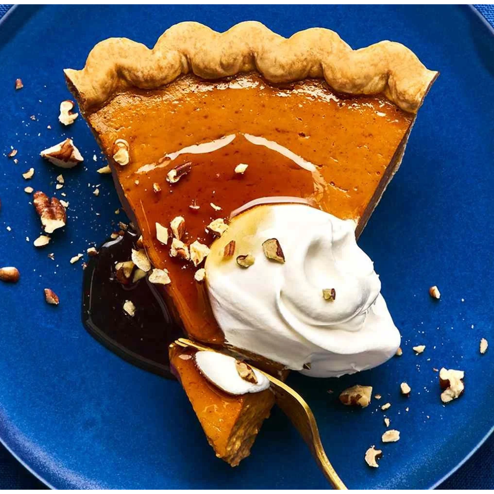

Pumpkin Pie
by Brianna Trujillo


A classic American Pumkin Pie with a spiced pumpkin filling and a flaky crust. Topped with the finest maple syrup and a dollop of whipped cream.

A classic American Pumkin Pie with a spiced pumpkin filling and a flaky crust. Topped with the finest maple syrup and a dollop of whipped cream.
I like the creamy texture of the pumpkin pie with the crispy crust.
Nothing over the top. I dont like pumpkin so I feel this dish was a little too much for me.
So delicious!! I recommend taking the leftover home and reheating it in the oven to get thet crunchy texture. Would 100% recommend!